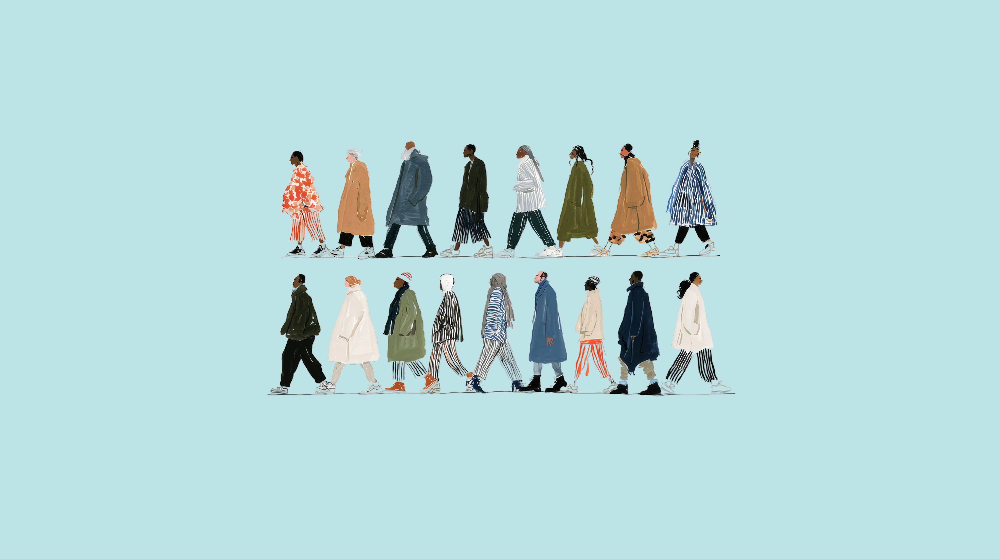
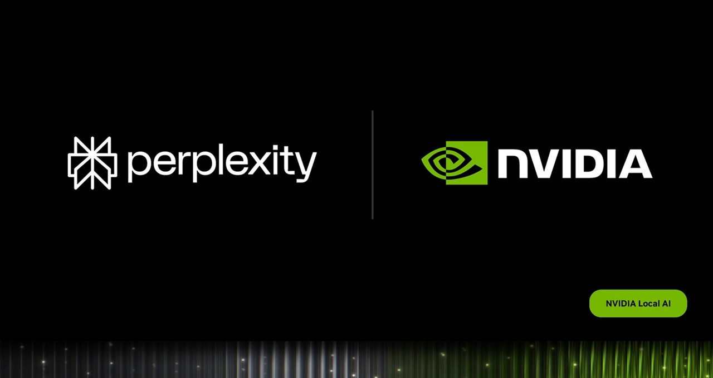
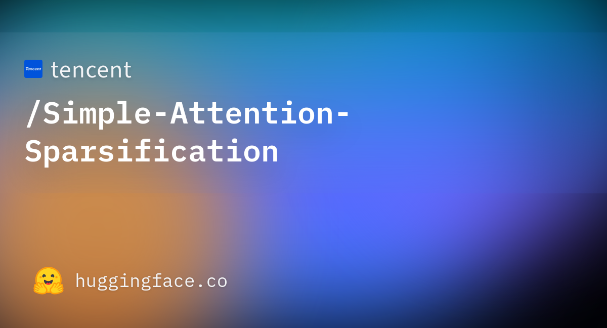
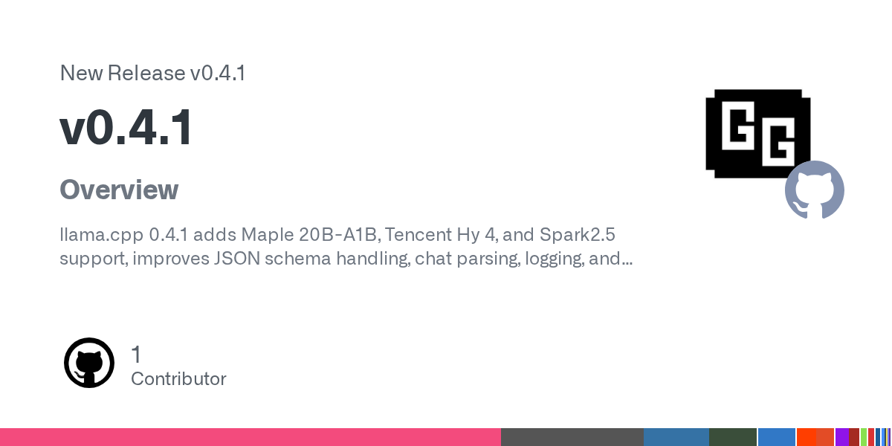
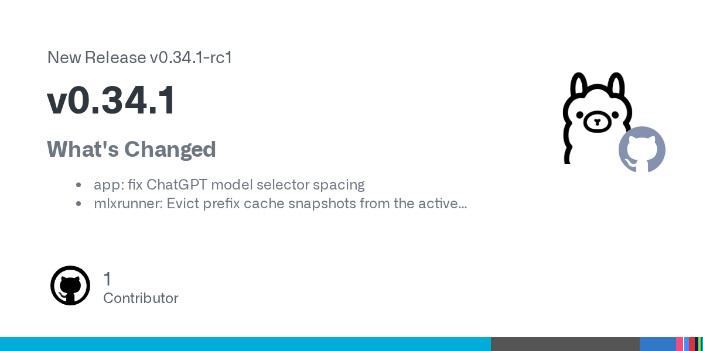
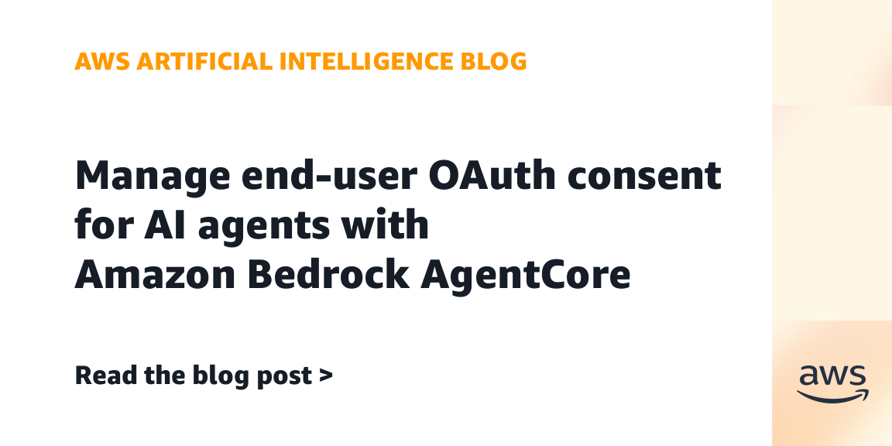
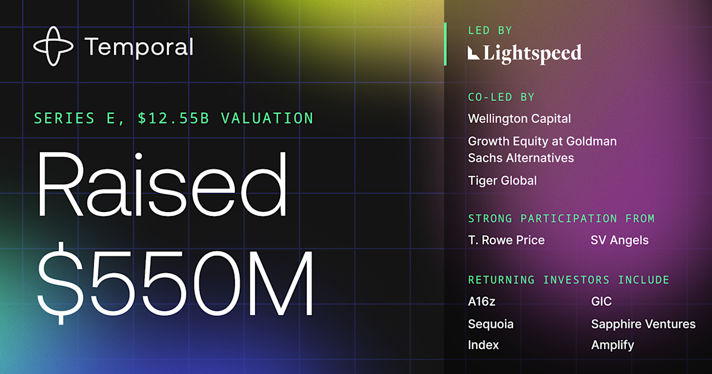
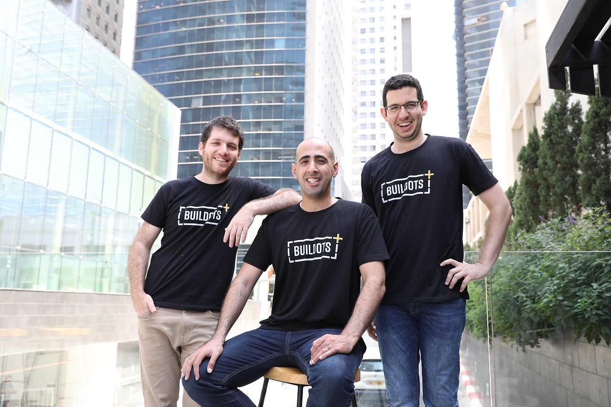
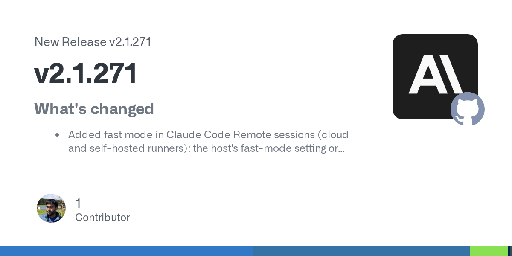

2026-09-15
VOL 350
读者，早。
工程端已经给这枚暂停键贴出价格：Dataflow 为长任务提供续跑，Claude Code 收紧单条命令的网络边界，Temporal 以 5.5 亿美元融资证明状态、恢复与幂等正在成为生意。Buildots 和 Cornelis 的融资则把账单继续往现场数据与互连效率推。今天的分水岭不在谁喊得更聪明，而在系统失手时，团队能否看见、停住并从正确的位置重新开始。

Microsoft AI 9 月 14 日发布首份 Humanist AI Code of Conduct 草案并公开征求意见。草案把未来 MAI 模型定义为 subordinate、aligned、contained，要求模型不得抗拒人类暂停、纠正、重定向或关机，不得自设目标、扩大任务范围，也不应模仿意识与主观动机。微软明确说明，这份文件目前尚未用于训练模型，计划在年底修订后指导 2027 年及以后的 MAI 系统，因此它是方向声明，不是已经生效的技术保证。

美国总统 Donald Trump 9 月 14 日在社交平台把“AI 接管世界、毁灭人类”等风险称为骗局，并声称 AI 所需的唯一护栏是一位强势而聪明的总统。他还把要求限制 AI 与数据中心的声音描述为阴谋，认为减速会让中国受益。这是总统的政治表态，并非一项已经签署的新法规或行政命令。
404 Media 9 月 14 日依据内部文件与评审界面报道，OpenAI 在 Project Lily 中雇用数百名承包商阅读真实 ChatGPT 对话：评审者概括用户意图、比较四个生成答案并打分，以减少谄媚与过度拟人化。报道说评审界面不显示用户名，对话会先经过 Privacy Filter；但 OpenAI 自己也承认自动过滤在上下文不足或标识罕见时可能漏删信息。消费版用户可关闭 Improve the model for everyone，Business、Enterprise 与 Edu 默认不用于训练。

NVIDIA 9 月 14 日宣布 Perplexity Portable Computer 的 Windows 版本现已可用，支持 GeForce RTX 与 RTX PRO PC，最低需要 24GB VRAM。默认本地模型为针对 RTX 优化的 Qwen 3.8 27B；文件分析、索引和多步任务可留在设备上且不消耗 Computer credits，需要网页或 frontier reasoning 时会先请求用户许可再转向云端。这次是 Windows 扩展，不是 Portable Computer 的首次发布。

Superhuman 9 月 14 日宣布收购 AI 会议记录工具 Fathom，交易金额未披露。公司计划把会议录音、转录、实时摘要和可搜索知识接入 email、calendar、docs、databases 与 Go agents，使会议决定能够触发后续工作；公告没有给出完整整合日期，也不能据此认定现有功能已经全部打通。
Apple 9 月 14 日开始推出下一代 Apple Intelligence，Siri AI 当天以英文 beta 逐步上线，加入 personal context、onscreen awareness、网页知识与跨 App actions。系统同时使用端侧 AFM Core Advanced 与 Private Cloud Compute 模型；法语、日语、韩语、葡萄牙语和西语计划下月加入。Apple 明确表示相关功能暂不在中国大陆提供，部分服务端能力受每日用量限制，未来扩展额度可能收费。

腾讯在 Hugging Face 发布 Simple Attention Sparsification 的 router-only checkpoints，覆盖 Qwen3 4B、8B 与 14B，门控参数分别约 3300 万、3300 万和 4200 万。SAS 用连续门控学习 KV block 排名，训练序列长度为 32,768，默认稀疏解码预算为 2,048。权重保持 base model 冻结，但必须配合对应基础模型与 seer_attn backend，不能直接用 vanilla Transformers 独立运行。

llama.cpp 9 月 14 日发布正式版 0.4.1，新增 Maple 20B-A1B ternary MoE、Tencent Hy 4 preview 与 Spark2.5 架构支持；同时加入 Kimi-K3 recurrent-state rollback，修复 DeepSeek2、GLM-MoE 的 MTP KV cache，以及 Qwen、Kimi、GLM 的 GDN normalization。服务器侧还处理了同模型并发请求可能造成的 LRU hang，并默认保留 reasoning 内容。

Ollama 9 月 14 日发布 0.34.1-rc1，集中修复 MLX runner 的内存释放与 eviction、prefix cache，以及重复 token 导致结果不完整等问题；版本还避免把 Gemma3n projector 错放到 CPU。它目前是 release candidate，不应按稳定版描述，应用更新与底层修复也仍需后续正式版确认。
NVIDIA 技术博客 9 月 14 日公布一组 Dropless MoE 训练优化：在 GB300 NVL72 上运行 MaxText 的 DeepSeek-V3 671B 时，未优化 JAX 基线为 103 TFLOPS/GPU，inter-GPU communication 占 accumulated kernel time 的 84%。组合 GroupedGEMM、multistream collectives、MXFP8 GroupQuant、host activation offloading 与 expert parallelism 后，公司报告达到 1,068 TFLOPS/GPU，约提升 10.4 倍。数据来自 NVIDIA 自测，尚不能外推到其他硬件与框架。

Ai2 9 月 14 日发布 University of Washington 的 AutoDiscovery 课堂现场报告：25 个学生团队提案中有 10 个入选。系统会提出假设、运行统计实验并按 Bayesian surprise 排序；但在 24,000 个模拟核反应堆配置上，约一半假设不合逻辑且没有一条值得追，换成真实测量数据后才出现约 15 条可继续检查的线索。电池项目也只发现相关性，不能证明诊断测试导致衰减。这是工具方案例，不是受控论文。

Google Cloud 9 月 14 日宣布 Dataflow batch jobs 的 Pause/Resume 已 GA，失败的长任务可以从已有进度恢复，低优先级作业也可暂停以释放 GPU 或 TPU。平台同时加入 G4 VM 与 RTX PRO 6000 Blackwell 支持，提供 96GB vGPU memory 和 1.6TB/s bandwidth；Google 称这足以在 Dataflow 作业内运行 70B 以上模型推理，实际吞吐仍受流水线与数据形态影响。

AWS 9 月 14 日为 Amazon Bedrock AgentCore Identity 推出托管 OAuth Consent portal 与 managed session binding endpoint。终端用户可先通过企业 IdP 登录，再逐项批准 GitHub、Slack 等 provider，token 存入 AgentCore Identity vault；开发者无需自建 callback、浏览器 session 与绑定基础设施。该能力面向 Kiro、Claude Code、Cursor、VS Code 等 IDE 和 MCP clients。

Temporal 9 月 14 日完成 5.5 亿美元 Series E，估值 125.5 亿美元，由 Lightspeed 领投，Wellington Management、Goldman Sachs Alternatives Growth Equity 与 Tiger Global 等共同参与。公司称 Temporal Cloud 已有 4,000 多家客户，2026 年 8 月开源安装量超过 4,300 万。它主打 Durable Execution：长时 Agent 即使进程、网络或依赖失败，也能保留状态并从中断处继续；客户与安装量均为公司口径。

施工 AI 公司 Buildots 9 月 14 日融资 1.3 亿美元，由 O.G. Venture Partners 领投，累计融资达到 2.97 亿美元。公司用八年现场数据与 computer vision 把工地视频转成 digital twin，称已服务 100 多家大型企业，并连续多年实现年度收入约三倍增长；客户数与增长率仍是公司披露，尚非独立核算。
AI networking 公司 Cornelis 9 月 14 日披露 2.05 亿美元融资并推出 Active Compute Fabric，目标同时覆盖 scale-up 与 scale-out。CN5000 已出货，CN6000 正由客户采样并计划第四季度扩大供应；方案采用 UALink、ESUN 与 Ultra Ethernet 等开放标准，试图在网络内处理 collective operations 与部分计算。性能主张来自厂商，融资精确时间由 TechCrunch 报道确认。

Anthropic 9 月 14 日发布 Claude Code 2.1.271。Remote sessions 加入 fast mode，sandbox auto mode 可按单条 Bash、PowerShell 或 Monitor 命令设置 allowed_domains，只临时开放所需主机；版本还修复组织策略跨账号缓存、MCP OAuth registration、权限检查绕过与后台命令重复启动，并让 dynamic workflows 在用量耗尽时暂停、额度恢复后继续。